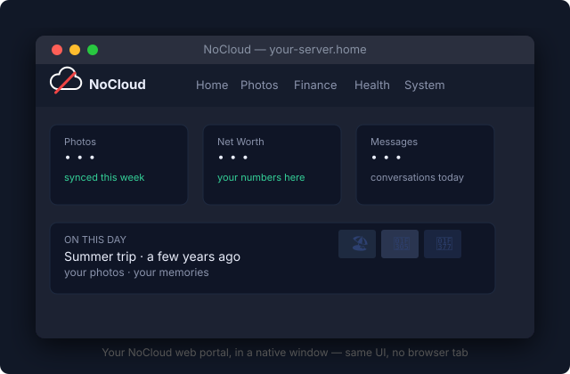
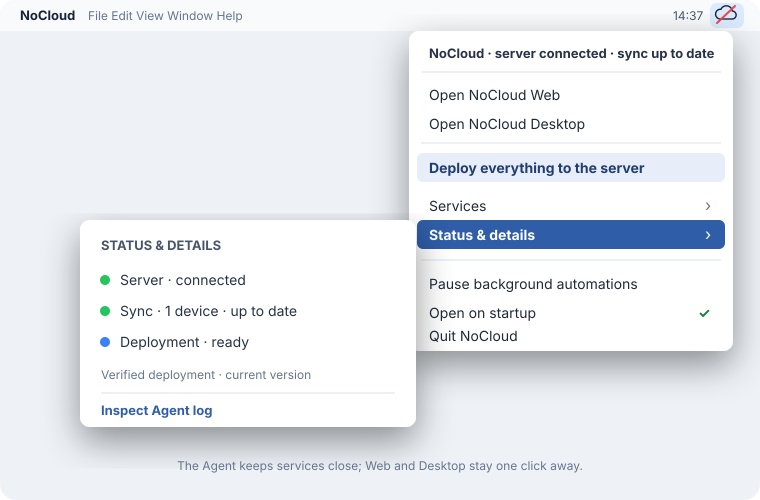

Desktop & menu bar apps
Two native companions ship alongside the web portal: a desktop wrapper that opens your instance in a native window, and a menu bar app that runs silently in the background and gives you one-click access to the most common actions.
Neither app contains any of your data or credentials. They both talk to the same local server as your browser — the only difference is the container they use to open it.
Desktop wrapper (macOS · Windows · Linux)

The desktop app is a thin Tauri shell. Tauri wraps your operating system's built-in WebView (Safari/WebKit on Mac, WebView2 on Windows, WebKitGTK on Linux) around a URL — so there is no bundled Chromium, no 200 MB download, and no separate browser process eating RAM. The window IS your server's web UI; it just lives in its own frame rather than a browser tab.
What it does
On launch, the app opens the saved address of your instance. It also recognises a configured
NOCLOUD_SITE_URL or an existing local config/site.env without asking.
On a first launch (nothing saved yet), it looks for a NoCloud checkout already on this Mac
(NOCLOUD_HOME, ~/.config/nocloud/home, or one of a few common locations like ~/NoCloud or
~/Documents/NoCloud):
- Found one or more → "Choose your NoCloud" lists them; pick one to open its portal.
- Found none → "Welcome to NoCloud" offers two paths: Connect to my portal (just enter a web address, the same as pointing the app at an instance that already runs elsewhere) or Set up NoCloud (install a new instance on this Mac, below).
Set up NoCloud on this Mac
A 3-step wizard (also reachable from the instance picker via "Set up NoCloud on this Mac"):
- NoCloud folder — where the checkout and local data live (e.g.
~/NoCloud). - Home server address + user — the small always-on machine NoCloud publishes to (see Installation for setting that up first if you haven't).
- NoCloud web address (optional) — where this app should open the portal; leave it blank
to default to
http://<home server address>.
Submitting clones nocloud-core, creates a .venv, installs dependencies, sets up
~/nocloud-private from the sample structure, and seeds the database — the same steps
Installation walks through by hand, run for you. A failed step can be
retried by submitting the wizard again with the same folder; already-completed steps aren't
redone. Pointing the wizard at a folder that's already a configured instance is refused rather
than silently overwritten — pick it from the instance list instead.
Once the URL is set (by either path), opening the app is identical to opening that URL in a browser, with one practical difference: the window stays out of your browser history, has its own entry in Alt+Tab / Cmd+Tab, and can be assigned its own desktop space. That's the full feature set — there is no extra logic.
Install
Download the installer for your platform from the
latest GitHub Release or build from
source (see Installation). Every release includes SHA256SUMS.txt for verifying
the downloaded installer.
| Platform | File | Notes |
|---|---|---|
| macOS | .dmg |
Choose the Apple Silicon or Intel file; right-click → Open on first launch while builds are unsigned |
| Windows | .msi |
Click "More info → Run anyway" at the SmartScreen prompt |
| Linux (portable) | .AppImage |
chmod +x NoCloud*.AppImage && ./NoCloud*.AppImage |
| Linux (Debian/Ubuntu) | .deb |
sudo dpkg -i NoCloud*.deb |
These builds are unsigned
There is no Apple notarization or Microsoft Authenticode certificate yet. The app connects only to your own server and contains no data, tokens, or credentials.
Menu bar app (macOS · Linux)

The menu bar app (scripts/nocloud_tray.py, built into NoCloud Agent.app via
py2app) lives in the system tray. On macOS it appears in
the top-right menu bar; on Linux it uses a compatible system-tray icon. It has no Dock icon
(LSUIElement=True) and does not appear in Cmd+Tab.
What it shows
Top section — identity and connectivity
- App version and the timestamp of the last successful deploy.
- Pi reachability: a green dot when the server host responds, red when it does not.
- Syncthing sync status: number of connected devices and whether all folders are up to date.
Services submenu
All 14 background jobs, each with a status indicator:
| Symbol | Meaning |
|---|---|
| ✓ (green) | Service is loaded and running |
| ✗ (red) | Service failed or did not start |
| • (grey) | Service not installed on this machine |
The 14 jobs: Net Worth + spending refresh, Immich memories, External disk backup, Mail backup, Mail refresh, Sink mailbox, Repo replica, Immich → XMP export, Server config backup, Typing pause, Daemon (on-demand jobs), Synced docs refresh, Trigger engine, Queue drain.
Actions
| Menu item | What it does |
|---|---|
| Connect / Disconnect services | Starts or stops all 14 background jobs at once. Disconnect writes a marker file (~/nocloud-private/local/stopped); reopening the app with that marker present re-enables everything. |
| Refresh net worth + spending | Triggers an immediate recalculation without waiting for the next scheduled run. |
| Deploy everything to the server | Runs deploy_server.sh in the background and shows a notification when done. |
| Open NoCloud | Opens the web portal in the default browser. |
| Inspect log | Tails the tray log file. |
| Open on startup | Toggles the LaunchAgent so the tray auto-starts at login. |
| Quit NoCloud | First click arms a 5-second confirm window; second click within that window actually quits. This prevents accidental shutdowns from a mis-click. |
Installing the menu bar app
The tray app is macOS/Linux-only and is not part of the standard nocloud setup flow.
1. Build the .app bundle
cd /path/to/nocloud-core
scripts/build_tray.sh
# → apps/tray/dist/NoCloud Agent.app
build_tray.sh runs py2app in alias mode against the local checkout. The resulting .app is
gitignored; rebuild it whenever you pull a tray update — alias mode means the bundle re-executes
your live source on every launch, so day-to-day script edits don't even need a rebuild.
2. Install the LaunchAgent
bash scripts/install_launch_agents.sh
Installs (or refreshes) every service's LaunchAgent — the tray included — from the versioned
templates in launchd/*.plist, substituting the real paths for the __PLACEHOLDER__ tokens.
It's safe to re-run any time: a plist whose content hasn't changed is left running untouched,
so this never needlessly restarts a service that's already up. The tray icon appears in the
menu bar within a few seconds; macOS also starts it automatically at every subsequent login.
Updating
After a git pull that changes scripts/nocloud_tray.py, no action is needed (alias mode
picks up the new source on the tray's next restart). After a change to apps/tray/setup.py
or the launchd/*.plist templates themselves, rebuild and reinstall:
scripts/build_tray.sh
bash scripts/install_launch_agents.sh
Linux
On Linux, pystray uses the system tray via AppIndicator or XEmbed depending on the
desktop environment. There is no .app bundle — run scripts/nocloud_tray.py directly
with a Python virtualenv that has pystray and Pillow installed, and register it with
your desktop's autostart mechanism.
Tray vs desktop — which to use?
| Desktop wrapper | Menu bar app | |
|---|---|---|
| Opens the web UI | Yes — in its own window | Via "Open NoCloud" menu item |
| Runs in background | No | Always |
| Shows service health | No | Yes |
| Triggers deploys | No | Yes |
| Platforms | Mac · Windows · Linux | Mac · Linux |
| Install | Download + open | Build + LaunchAgent |